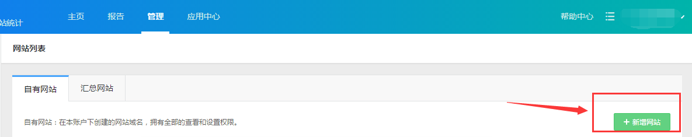
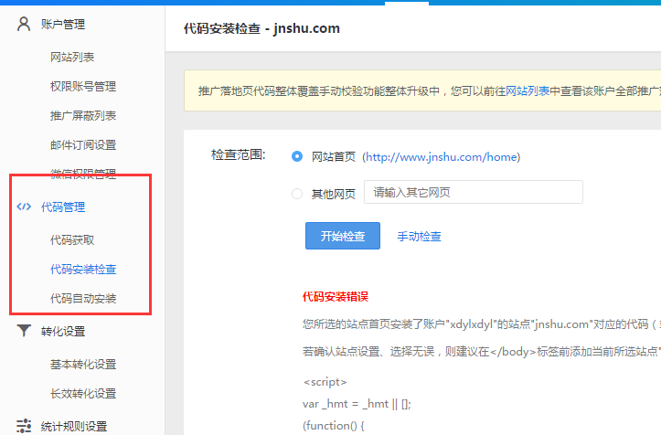
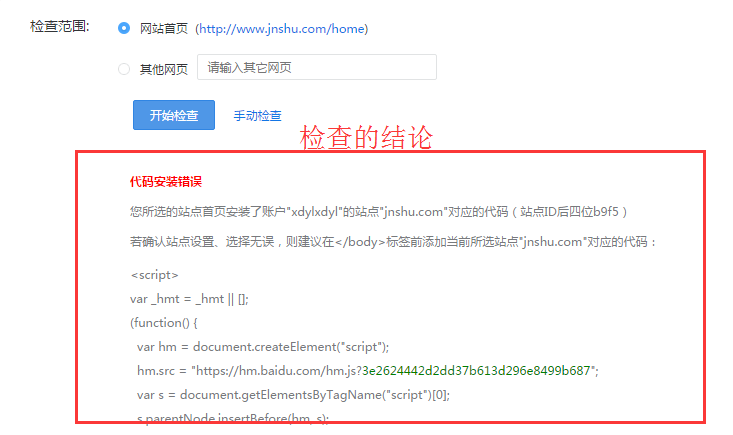

分享人：朱英杰
目录
1.背景介绍
2.知识剖析
3.常见问题
4.解决方案
5.编码实战
6.扩展思考
7.参考文献
8.更多讨论
为什么需要统计？
自古以来，人们就喜欢统计这玩意，古时候人们就喜欢数着自己家里有几把锄头几把砍刀几分钱，也喜欢算算村子里自己能打得过哪些人，又有哪些人自己惹不起，这样就知道哪些人需要避开走，去尽量降低自己的损失。
到现在了，人们也喜欢知道能知道的各种信息，比如世界上哪个国家有多少亩地，有多少人，有多少核武器，有多少资源能用多久。。。这些信息整合起来都能得出一些有用的结论，比如国家上有多少石油，用一点少一点，这个时候我们就会想一些办法去合理的分配这些资源。
总而言之，统计能够帮助我们根据实际的数据来得出一些有价值的信息，我们可以根据这个信息去选择有利于自己的对策。
1.统计：“统计”有合计、总计的意思。指对某一现象有关的数据的搜集、整理、计算、分析、解释、表述等的活动。
2.网站流量分析：是指在获得网站访问量基本数据的情况下对有关数据进行统计、分析，从中发现用户访问网站的规律，并将这些规律与网络营销策略等相结合，从而发现目前网络营销活动中可能存在的问题，并为进一步修正或重新制定网络营销策略提供依据。
3.百度统计：
百度统计是百度推出的一款免费的专业网站流量分析工具，能够告诉用户访客是如何找到并浏览用户的网站，在网站上做了些什么，有了这些信息，可以帮助用户改善访客在用户的网站上的使用体验，不断提升网站的投资回报率。
2.添加网址：
3.代码安装：
4.代码检查：
如果代码安装无误，百度统计就会检测你的网站，获得相关的数据：实时的访客记录、在线访客人数、访问明细、每个时间段的趋势分析等等。
具体实例：
官网登录之后，统计系统-百度统计-网站统计-演示
CNZZ（友盟）、腾讯分析、谷歌分析、51.LA统计......
参考一： 百度统计官网
参考二：网站流量分析
它可以全程跟踪访客的行为路径，并且帮助我们监控各种网络媒介推广效果，让我们及时了解哪些关键词以及哪些创意的效果最好
他能够清楚的告诉我们访客是如何找到并浏览您的网站，以及如何改善访客在您网站上的使用体验，帮助您让更多的访客成为客户，不断提升网站的转化率
对于网站访问量统计分析需要长期进行才能发现其规律，尤其对关系到网络营销策略和效果的有关因素进行完整的跟踪和分析更为重要，这些都需要对网站流量各项统计指标的含义有深刻认识，并制定完善的网站访问统计指标体系；
感谢大家观看
BY : 赵锐泉|万维娜